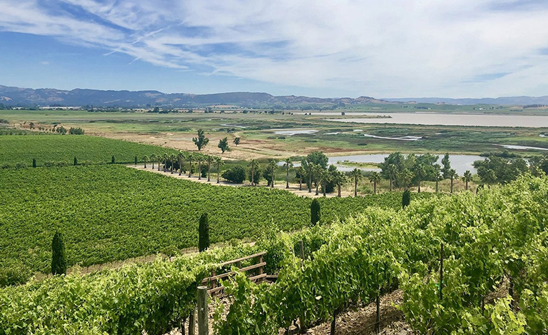
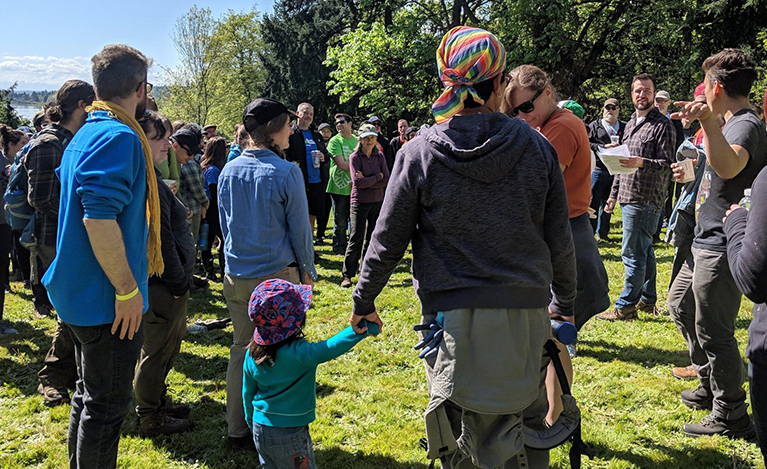
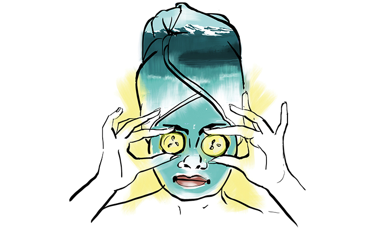

Leisure retreats

The view from Viansa Sonoma Winery of Sonoma Valley, San Pablo Bay and the Mayacamas Mountains. (Caitlin Flynn / Special to The Seattle Times)
Stress can literally make you sick. Sometimes you need to leave reality behind, indulge, relax and reset. So pick a close-ish destination you’ve always wanted to visit and give yourself a weekend to recuperate.
Sonoma
Affinity retreats

Volunteers help out at Earth Gay, an environmental day of service that OUT There Adventures helped facilitate with the Friends of Colman Park. (Crystal Paul / The Seattle Times)
Sometimes you just need to be around the people who "get it." Affinity group travel is a great way to step away from social circumstances where your experience is uncommon and connect with people who might share common ground.
OUT There Adventures
Treat yo' self/indulge

Feeling stressed? Pamper yourself without breaking the bank at one of the best Seattle-area day spas. (Gabriel Campanario / The Seattle Times)
Been burning the midnight oil so often lately that your flame's flickering out? Refuel by giving yourself a free pass to pamper yourself and treat yourself to all your favorite indulgences.
Spa day